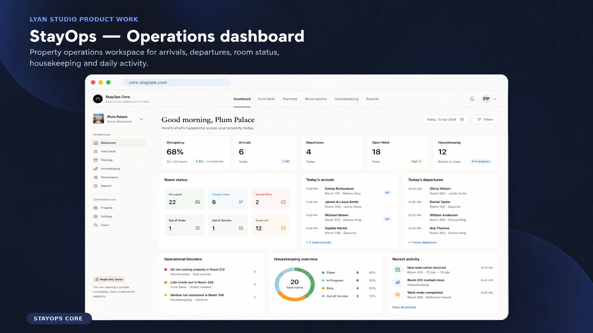
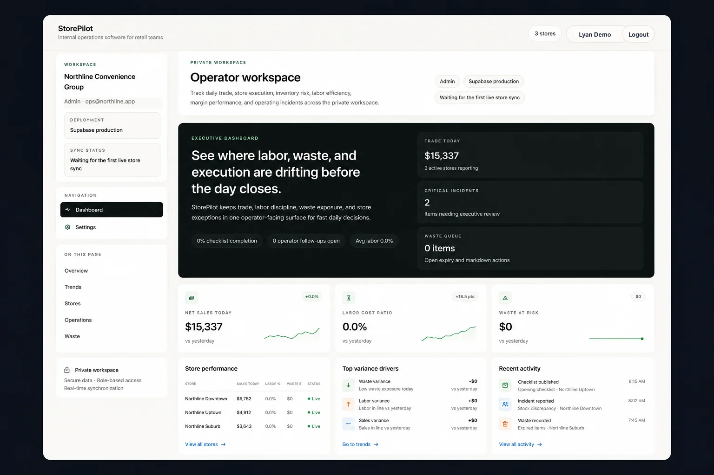
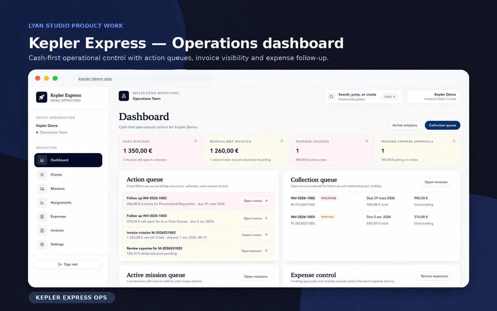

Spreadsheets carrying critical work
Stock, reservations or client follow-up depend on files that are hard to keep current.
Operational Software Studio
Lyan Studio designs and builds focused internal tools, dashboards and operational systems for real-world teams.
Founder-led by Anis Allouache · Paris, France / Remote
The work between your tools
A focused application starts with the people, decisions and handoffs that existing tools don’t cover.
Stock, reservations or client follow-up depend on files that are hard to keep current.
Disconnected tools leave ownership unclear and progress buried in messages.
Repetitive back-office steps and reporting take time away from resolving exceptions.
Teams need to move from a number to the task, person or decision behind it.
Featured systems
Three systems across hospitality, retail and logistics. Each addresses a distinct daily workflow.

Hospitality Operations
Product in development
Reservations, rooms, housekeeping, incidents and front-desk workflows in one focused interface.
Explore StayOps
Retail Operations
Concept product · Demo environment using sample data
Stock, sales signals, margin visibility, waste risk and daily operating routines.
Explore StorePilot
Logistics / Service Operations
Portfolio application
Mission tracking, client follow-up, expenses, invoices and payment visibility.
Explore Kepler ExpressLabs & additional product work
Additional work in checkout, business management and internal workflows.
Local-first retail POS workflow for checkout, products, cash sessions and stock.
Electron · React · TypeScript · SQLite
Explore AlcaisseBusiness management and invoicing dashboard connecting clients, activity and billing.
React · TypeScript · Supabase · Vercel
Explore MyBiInternal workflow platform concept for tasks, ownership, statuses and follow-up.
Next.js · TypeScript · Supabase · PostgreSQL
Explore OpsCoreFor teams replacing spreadsheets, manual follow-up or fragmented workflows with one focused application.
For teams with existing data and processes that need an interface people can use to decide and act.
For existing applications that need a focused module or workflow without rebuilding the whole product.
Implementation
The stack follows the workflow and delivery constraints. Our product work includes Next.js, React, TypeScript, Supabase, PostgreSQL, Tailwind CSS and Vercel, with Electron and SQLite for local-first checkout work.
Clear scope, useful interfaces and a maintainable first release.
Start with the workflow
Tell us how your team handles the work today and where it gets stuck. We’ll help define a focused first release.
Discuss an operational tool